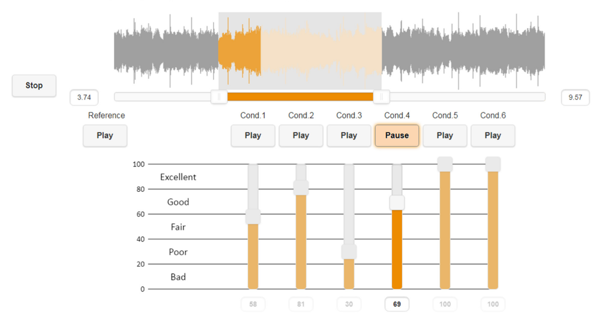
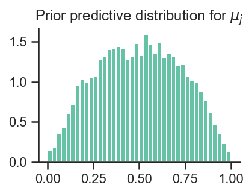
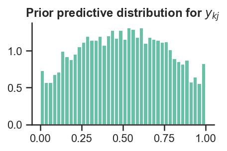
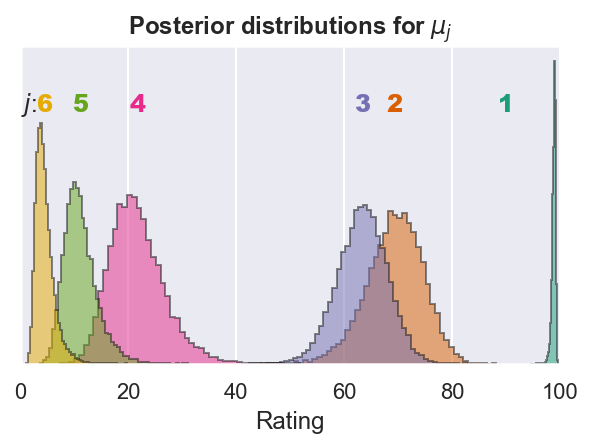

Sensory evaluation of sound is an essential step in the development of audio and acoustic systems. In sensory evaluation listening tests, assessors listen to different audio systems, such as alternative audio codecs, hardware configurations, loudspeaker layouts, or signal processing methods, and give responses according to the specific listening test task; for example: select the system that appears to have more bass or clarity, or give each system a rating between 0 and 100 for stereo image quality or basic audio quality.
Results from such tests always involve uncertainty; different listeners may give slightly different ratings to the same system, or even the same listener may give different responses in repeated trials of identical conditions. When interpreting the results and drawing conclusions from the data, this uncertainty is taken into account by statistical analysis. If you’ve ever done statistics on listening test data (or possibly other kinds of sensory evaluation data), you may be familiar with the feeling that the statistical models and methods are not working for you but you are instead working for them—and not getting much in return.
I suggest that this difficulty with sensory evaluation data and statistics is because the classical statistical testing is geared towards answering different kinds of questions than the ones we’d like to ask about our listening experiment results. But luckily, things can be made easier by using a different statistical framework—ranking & selection (R&S)—where the questions are formulated in ways that fit sensory evaluation tasks perfectly.
This article is a Jupyter notebook, rendered to HTML with Quarto. It contains the Python code for running the analysis and creating the figures and tables. The code cells are hidden by default, to keep the text readable—the code cells can be expanded by clicking on them. In addition to standard scientific Python packages, I’ll use STAN for the bayesian inference via its CmdStanPy python interface.
Code
import numpy as npfrom scipy import statsfrom scipy.special import expitimport matplotlib.pyplot as pltimport arviz as azimport pandas as pdimport cmdstanpy as cspimport seaborn as snsplt.rcParams["figure.dpi"] =144sns.set_theme(context="notebook", style="whitegrid", palette="Set2")%matplotlib inline
Listening test statistics
A very basic premise in sensory evaluation and related listening tests is that the systems under test are different from each other. If we run a listening test with a bunch of headphones of a certain price point from competing brands, then we know the headphones are physically different and they have been made with different design goals in mind that will undoubtedly affect the acoustics of the product. Or if we compare different lossy audio codecs with various bit rates, then we know that there is less information in the compressed streams than in the original sound, and that the different codecs implement the compression differently. With this premise in mind, the aim of a listening test is then to quantify the differences between systems. We already know the systems are different because we made them so; we want to know how clear are the differences between systems, and quite often, which are the best systems.
But when it comes time for the statistical analysis of the listening test results, things sometimes get a bit tricky. Instead of getting direct answers to the questions that we are interested in, we instead have to ask, and provide answers to, some completely different questions that we’re not so interested in. In classical statistical testing, such as ANOVA, we would for example test a null hypothesis corresponding to the opposite of our basic premise above: what if, on average, there were no actual differences between the systems—how likely would it then be to see these results you have collected in your listening experiment? And after having conducted the statistical analysis, we could hopefully conclude that it would be very unlikely indeed.
The statistical analysis would have now informed us that it’s more likely that at least one of the systems under test sounds on average different from the others—in a way that the assessors can reliably report. But we don’t know which system or systems exactly drive this main effect. To know that, we would have to conduct post-hoc tests, constructing new null hypotheses, alternative hypotheses, and statistical tests, at each step hoping to reject statistical formulations that make little sense considering the basic premise. Perhaps it is not that surprising then, that the statistical analysis sometimes feels a bit uncomfortable and unhelpful for our purposes.
Ranking & Selection
In the statistical framework called ranking and selection (R&S)1,2, we would instead directly ask questions like “which system is on average the best?” and based on the listening test responses arrive at both an answer as well as a measure of confidence for the answer, such as “system 3 is rated best with probability 96.3%”. Or we can rank the systems based on current assessor responses and ask “starting from the top, how many systems \(K\) out of total \(N\) do I have to pick to be at least 99.9% certain that one of the systems is really the best?”, with the answer being something between 1 (it is very clear which system is the best) and \(N\) (we have no idea which is best, so if we include all systems, the best is one of them with 100% confidence).
More generally, ranking and selection procedures are statistical techniques for comparing the parameters of some \(k\) populations under the assumption that these parameters are not all the same.
In other words, R&S seems like a perfect match for our sensory evaluation data. We get rid of the artificial null hypotheses and their testing and rejection, and instead go directly at the questions we actually want answered.
Another good match for R&S is Bayesian inference, where we would model “the parameters of some \(k\) populations” as distributions of random variables, and conduct our statistical analysis using those distributions. This approach is called Bayesian R&S and it is used already in fields like operations research and machine learning. Bringing in the bayesian framework gives us a lot more tools to work with. After formulating our listening test as a bayesian statistical model, we can do bayesian experimental design (BED) to optimise the listening test, for example by using a sequential design, where we pick the next test item based on the information value we would expect to gain by testing each particular item4,5.
Next, I’ll show how Bayesian R&S could be employed in the statistical analysis of results of the widely-used MUSHRA listening test format.
The MUSHRA test
The ITU-R BS.1534-36 recommendation defines the “Multi Stimulus test with Hidden Reference and Anchor (MUSHRA)” method, which is intended for listening tests of intermediate-quality systems. In the test, assessors listen to sound clips which are processed through each system, allowing direct comparison of the systems in terms of sound coloration, stereo image, or some other relevant attribute. For each sound clip, a high-quality reference (e.g., a lossless audio sample), a low-quality anchor (think: low-passed, “lo-fi” sound sample), and the actual audio systems under comparison are evaluated, and listeners rate them on a 0–100 scale, where 100 corresponds to the quality of the reference system and 0 corresponds to the quality of the low-quality anchor.
Since MUSHRA is intended for intermediate-quality systems, it means that the differences between systems should be quite obvious. It is not a test design meant to tease out the smallest, almost imperceptible differences between reference-grade hifi systems. Instead, the point is to have a straight-forward and relatively fast way for rating multiple test items. For statistical demonstration purposes, this is great, since for a MUSHRA test it is really clear to both the experimenter and the assessor that there are differences between systems.
A popular choice for running a MUSHRA test is by using the browser-based webMUSHRA framework7. Figure 1 shows the experiment user interface, where ratings for each test item are given with sliders. The assessor can switch immediately between different test items, and it’s possible to loop a specific section of the sound clip. The systems are blinded, meaning that it is not known which test item corresponds to which system, and their ordering in the user interface is random. There is a labeled reference system, which the other systems are compared to, but also one of the blinded test items is the hidden reference—and this test item should be rated at 100.

Figure 1: webMUSHRA user interface
Example data
We have the results of a MUSHRA listening test that investigated spatial audio quality, in which \(N = 15\) listeners \(k = 1 \ldots N\) evaluated \(M = 6\) systems \(j = 1 \ldots 6\) (of which system 1 is the reference and system 6 the anchor) and gave them ratings \(r_{kj} \in [0, 100]\). The responses are shown in Figure 2.
Here we will only consider ratings for a single sound clip, to keep the statistical model simple enough. For actual listening experiment data, where we have multiple conditions and possibly repetitions of items, we would add more parameters to the model, accounting for different experimental conditions and also listener-specific effects.
Figure 2: Responses from 15 participants in a MUSHRA test with four systems under test (systems 2–5), as well as a hidden reference (system 1) and anchor (system 6).
We see that the reference system 1 has been correctly identified by the listeners every time, and apart from two answers also the anchor 6 has been consistently rated at 0. Systems 4 and 5 perform clearly worse than systems 2 and 3. This kind of data is a bit cumbersome if we would for example want to do ANOVA directly on the raw ratings; the responses are limited between 0 and 100, so the ratings tend to “pack” at the extremes, and the assumption of homogeneity of variances (of the residuals) is not fulfilled. As with the bayesian model in the next section, also ANOVA can be extended with GLMs and other approaches that mitigate these issues, but with ANOVA, in the end we would still be doing hypothesis testing and not R&S.
Hierarchical Bayesian model
We model the ratings \(r_{kj}\) using a Beta distribution. They are first scaled to the interval [0,1], and the resulting values \(y_{kj}\) are modeled as beta-distributed random variables. The main reason for using a beta distribution is that others use it for this kind of data as well. But it is a natural choice in that it is defined on an interval [0, 1] as opposed to the full real line (\(-\infty\), \(+\infty\)) as in the case of e.g. the normal distribution or the positive real line (0, \(+\infty\)) as for gamma and \(\chi^2\) distributions, and so it is a good choice for bounded scale data. The beta distribution also appears in order statistics; if we draw a sample from a uniform distribution, then the order statistics of the sample follow a beta distribution. If in a listening test we have listeners using the full range of the scale, then the results might not be too far from a uniform distribution, and it sounds reasonable that a beta distribution could work here.
As mentioned earlier, we run the listening test with the assumption that the sound samples do not sound the same and that the distribution of ratings for each system will differ from the others. In the model, we will account for this by allowing the responses for each system \(j\) to have individual shape parameters \(\alpha_j\) and \(\beta_j\) for the beta distribution. Here we will reparametrize the beta distribution \(\mathrm{Beta}(\alpha_j, \beta_j)\) using \(\alpha_j = \mu_j \phi_j\) and \(\beta_j = (1 - \mu_j) \phi_j\). In this format, the \(\mu_j\) corresponds to the system-specific mean of the beta distribution on [0, 1] and \(\phi_j\) determines the “precision” of the beta distribution, i.e., in practice how tightly the distribution is concentrated near the mean \(\mu_j\). A high value of \(\phi_j\) means that the ratings given by different listeners for system \(j\) are very close to each other; a low value of \(\phi_j\), in turn, means that the ratings are spread more widely over [0, 1].
Since we want to restrict the \(\mu_j\) also to the interval [0, 1], we will model it as a logit-normally distributed random variable, meaning that the logit of \(\mu_j\) has a normal distribution. In practice, we set \(\mathrm{logit}(\mu_j) = \mu_0 + \alpha_j\), where \(\mu_0\) is term corresponding to the overall mean rating of all systems, and \(\alpha_j\) corresponds to the average system-specific deviation from the overall mean, and set normal priors for \(\mu_j\) and \(\alpha_j\). The logit acts here as a link function, as with generalized linear models (GLMs).
The hierarchical model in full is: \[
\begin{aligned}
y_{kj} &\sim \mathrm{Beta}(\mu_j \phi_j,\; (1 - \mu_j)\phi_j), \\
\mathrm{logit}(\mu_j) &= \mu_0 + \alpha_j, \\
\mu_0 &\sim \mathcal{N}(0, 1), \\
\alpha_j &\sim \mathcal{N}(0, \sigma_\alpha^2), \\
\sigma_\alpha^2 &\sim \mathrm{Inv\text{-}Gamma}(3, 1), \\
\phi_j &\sim \mathrm{Gamma}(2, 0.1),
\end{aligned}
\tag{1}\] where \(\sigma_{\alpha}^2\) describes uncertainty in the systems’ means on the logit scale and the \(\phi_j\) have a Gamma prior. In Bayesian terms, the parameters \(\boldsymbol{\theta}\) of the hierarchical model are \(\mu_j\), \(\mu_0\), \(\alpha_j\), and \(\phi_j\), which determine the conditional likelihood \(p(\boldsymbol{y}|\boldsymbol{\theta})\) of the observations \(\boldsymbol{y} = {y_{kj}}\). The distributions of the parameters \(\boldsymbol{\theta}\) are called prior distributions, and they in turn may depend on hyperparameters \(\boldsymbol{\eta}\) (e.g., \(\sigma_{\alpha}^2\)).
In Bayesian inference, a joint posterior distribution \(p(\boldsymbol{\theta},\boldsymbol{\eta}|\boldsymbol{y})\) is derived for the parameters and hyperparameters using Bayes’ rule: \[
p(\boldsymbol{\theta},\boldsymbol{\eta}|\boldsymbol{y}) \propto p(\boldsymbol{\eta})p(\boldsymbol{\theta}|\boldsymbol{\eta})p(\boldsymbol{y}|\boldsymbol{\theta}),
\tag{2}\] which describes how likely different values of \(\boldsymbol{\theta}\) and \(\boldsymbol{\eta}\) are, given the observations \(\boldsymbol{y}\). In Bayesian inference, the statistical analysis focuses on the posterior distributions of the parameters.
Prior predictive checks
To have an idea of what the model (1) does, and whether the priors we have chosen make any sense, it is a good idea to take a look at the prior predictive distributions. Here, no data is yet analysed—we only want to take the prior distributions as they are and see how the parameters and predictive distributions for \(y_{kj}\) look like with those values. We will now draw random samples from the prior and hyperprior distributions and use those random values as parameters for drawing samples from the beta distribution.
The point is to see if the distributions of \(\mu_j\) and \(y_{kj}\) make sense given our experimental design. It could be for example that our model would a priori result in distributions that are focused on the extreme ends of the scale: to 0 and 1, without any probability mass in between. This would mean that before seeing any data, the model expects that all ratings would most likely be either of value 0 or 100 and that it would be extremely rare to see any ratings of intermediate values. Clearly, this is not what we expect, but rather we assume that ratings should be quite evenly distributed across the scale—and our prior predicitive distributions should then reflect this.
Code
N =10000np.random.seed(123)# draw N samples from the prior distributionsmu0 = stats.norm.rvs(0, 1, size=N)# the alpha_j prior depends on the hyperprior sigma_alpha, so draw them first ...sigma_alpha = stats.invgamma.rvs(3, size=N)# ... and use the sigma_alpha values to draw alpha_jalpha_j = stats.norm.rvs(0, sigma_alpha, size=N)# note the difference between scipy and stan parameters. Here scale=10, and in stan the 2nd parameter is 0.1 = 1/scalephi_j = stats.gamma.rvs(2, scale=10, size=N)# we have logit(mu_j) = mu0 + alpha_j, so take the inverse logit (in scipy, expit) to get mu_jmu_j = expit(mu0 + alpha_j)# draw values for y based on the priorsy_kj = stats.beta.rvs(mu_j * phi_j, (1- mu_j)*phi_j, size=N)
First, let’s look at how the beta distributions look like. Here we draw 15 random pairs of \(\mu_j\) and \(\phi_j\) parameters from the priors and generate 10000 samples from the beta distribution with those values for predictions of possible \(y_{kj}\).
Figure 3: Beta distributions with shape parameters \(\mu_j\) and \(\phi_j\) drawn from the prior distributions
We see that the mean values \(\mu_j\) go from 0.12 to 0.88 and the precisions \(\phi_j\) from 2.45 (very broad distribution in upper right corner) to 50.2 (narrow distribution in lower right corner). The distributions seem plausible in that there are no cases where the responses would for example be concentrated on some single value, and there is also good variability in the shapes of the distributions such that many different kinds of response profiles are plausible with the priors. Scale effects also appear to be taken into account, since as the mean gets closer to either extreme, the values start to “pack” at the boundaries, as we would also expect to happen for the actual ratings.
Looking at the prior distribution for \(\mu_j\), we see that the means are more concentrated towards the center of the scale. This could be interpreted as a conservative prior; it is less likely to have systems with means at the very extremes. If instead of looking at the distributions of \(y_{kj}\) obtained with fixed parameters as in Figure 3, we look at how the \(y_{kj}\) are distributed across all possible prior draws, we see that the simulated ratings are quite evenly distributed across the full scale with a bit more values in the middle, and also clear peaks at the extreme ends of the scale.
As very general prior assumptions, these distributions look ok—people are usually more likely to give intermediate ratings that extreme values—but depending on the specific situation, it could make sense to fine-tune the priors. In a MUSHRA test, the midpoint of the scale does not actually correspond to some neutral value. Instead, the labels on the scale are “excellent”, “good”, “fair”, “poor”, and “bad”, and thus the midpoint would fall within the range labelled as “fair”. There can be language factors or cultural factors which might have slight effects regarding where a “neutral” answer would go on this scale; does “good” mean “ok”, and how much worse is “bad” than “poor”? So, depending on the context, one might adjust the priors for example so that higher ratings would be more likely. This would not have a dramatic effect on the results, however, since as actual observations are fitted to the model, strong evidence will always outweigh these weakly informative priors.
Code
sns.set_style("ticks")sns.set_palette("Set2")fig1, ax = plt.subplots(1,1, figsize=(3,2))ax.hist(mu_j, bins=40, density=True)ax.set_title(r"Prior predictive distribution for $\mu_j$")sns.despine()fig2, ax = plt.subplots(1,1, figsize=(3,2))ax.hist(y_kj, bins=40, density=True)ax.set_title(r"Prior predictive distribution for $y_{kj}$")sns.despine()

(a) Distribution of system-specific means for beta distribution

(b) Distribution of predicted observations
Figure 4: Prior predictive distributions
STAN implementation
The model in Equation 1 was implemented using STAN. The model specification is given below. STAN uses the MCMC method (Markov Chain Monte Carlo) to numerically solve the posterior distribution — by simulating a sufficient number of samples from the posterior distribution implied by the model, the distribution can be approximated to the desired accuracy.
// Hierarchical Beta regression for MUSHRA scoresdata {int<lower=1> N; // total observationsint<lower=1> S; // number of systemsarray[N] int<lower=1> system_id; // system id of each observationarray[N] real<lower=0,upper=1> y; // rescaled scores in (0,1)}parameters {real mu_0; // global intercept on logit scalearray[S] real alpha_j; // system offsets (logit scale)real<lower=0> sigma_alpha; // sd for system effectsarray[S] real<lower=0> phi_j; // Beta precision}transformed parameters {// linear predictor on logit scale for each observationvector[N] eta;for (n in1:N) { eta[n] = mu_0 + alpha_j[system_id[n]]; }}model {// Priors mu_0 ~ normal(0, 1); alpha_j ~ normal(0, sigma_alpha); sigma_alpha ~ inv_gamma(3, 1); phi_j ~ gamma(2, 0.1);// Likelihood: parameterize Beta by mean mu (inv_logit(eta)) and precision phifor (n in1:N) {real mu_j = inv_logit(eta[n]); y[n] ~ beta(mu_j * phi_j[system_id[n]], (1 - mu_j) * phi_j[system_id[n]]); }}
Model fitting
We then take the STAN model above and fit the actual observations (see Figure 2) to it. First the ratings \(r_{kj}\) are scaled to the interval [0, 1] and those values, along with the information about the system for which that rating was given, are passed to the STAN model. The MCMC runs four separate chains, which are first sampled for some time to warm up and stabilise the chains, and then 5000 draws are taken from each Markov chain for the actual posterior draws.
Once the MCMC has completed, we can examine the results. First, we check that the simulation chains have converged to the same values for the parameters. This is indicated by the value R_hat in the following table, and quoting STAN documentation, the R_hat convergence diagnostic …
[…] compares the between- and within-chain estimates for model parameters and other univariate quantities of interest. If chains have not mixed well (ie, the between- and within-chain estimates don’t agree), R-hat is larger than 1. We recommend running at least four chains by default and only using the sample if R-hat is less than 1.05.
All parameters and hyperparameters have an R_hat of 1.0, so all good so far.
We can also look at the MCMC samples with ArviZ (Figure 5), which is a visual tool for working with bayesian models in Python. On the right panel, there are the 5000 individual draws for each chain and on the left panel, the distribution of those drawn values.
Looking at the draws for \(\mu_0\) (labeled as mu_0) there seems to be only one curve on the left, but it is just that the distributions for the four chains agree so well that they are basically overlaid and appear as a single curve. This is as we would hope—if we would get diverging simulation chains and different distributions for the different chains, it would mean that something’s unstable and we couldn’t trust the results. For \(\alpha_j\), \(\phi_j\) and eta, the plots show individual curves for each system-specific distribution. In the next step of the analysis, the values of eta are then mapped with the inverse logit to the [0, 1] range, giving us our \(\mu_j\).
Posterior analysis
Posterior predictive checks
When we have the full model fitted with data, we’d first like to check that the model makes sense. As we did with the priors, we will now first look at what the full model actually does with the parameter distributions that we’ve obtained. In particular, we want to be sure that the model fits with our observations and has not converged to some strange combination of parameter values.
Since the parameter values are drawn from a distribution, we can take each draw of parameters and simulate predictions \(\tilde{y}\) for each combination. But it’s also possible to take point estimates of the parameter distributions and use those fixed values. Here I’ll use the posterior means for each parameter.
Figure 6: Posterior predictive distributions for each system. Here, the values of \(y\) are scaled to [0, 100] for comparison with original listening test ratings \(r_{kj}\).
The distributions plotted as shaded areas seem to fit nicely with the observations, spanning the range of given ratings. The scale end effects are shown very nicely; where there are multiple ratings at either extreme, the distribution is “pulled” towards the edge.
R&S with posteriors
Now that we have the bayesian model for our listening test data and the posterior distributions for the model parameters, actually the R&S part is very very simple. Thinking back on the Gibbons et al. quote earlier: “… ranking and selection procedures are statistical techniques for comparing the parameters of some \(k\) populations …”, we now have in fact a full statistical model describing those parameters, and can calculate the R&S statistics from the posterior draws.
As an example, if we look at the posterior distributions of \(\mu_j\) (Figure 7), we see that the distribution of \(\mu_2\) seems to have most mass above the others (apart from the reference system \(\mu_1\)). But how confident can we be in stating that system 2 is on average the second best? We calculate from the posterior draws \(\mathrm{Pr}(\mu_2 > \mathrm{max}_{j \neq 3} \mu_j)\), or in practice count the number of posterior draws where the value of \(\mu_2\) ranks second and normalise with the total number of draws. Basically it’s a competition between \(\mu_3\) and \(\mu_2\), and on each posterior draw, we get a single value from each distribution; as the distributions overla, sometimes the value for \(\mu_3\) is higher than the one for \(\mu_2\), but more often \(\mu_2\) is higher than \(\mu_3\). The result is that system 2 ranks second best in 81.5% of the posterior draws (and system 3 18.5% of the time).
Code
best_system = np.argmax(mu_draws[:, 1:5], axis=1) +2vals, counts = np.unique(best_system, return_counts=True)for v, c inzip(vals, counts):print(f"System {v} is 2nd best with probability {100*c/mu_draws.shape[0]:.1f}%")sns.set_theme(context="notebook", style="darkgrid", palette="Dark2")_, ax = plt.subplots(1,1,figsize=(4,3))for i inrange(6): h, bins = np.histogram(100*mu_draws[:, i], bins=50) ax.stairs(h, bins, fill=True, ls="-", ec="0.1", alpha=0.5, lw=1.0) system_mean =100*mu_draws[:,i].mean()if i ==0: system_mean =90 ax.text(system_mean, 2300, f"{i+1}", horizontalalignment="center", c=f"C{i}", fontweight="extra bold")ax.text(0, 2300, "$j$:", horizontalalignment="left")#sns.despine(ax=ax, left=True, trim=True)ax.set_yticks([])ax.set_xlim((0,100))ax.set_xlabel("Rating")ax.set_title(r"Posterior distributions for $\mu_j$")plt.savefig("preview.png");
System 2 is 2nd best with probability 81.5%
System 3 is 2nd best with probability 18.5%

Figure 7: Posterior distributions for system-specific mean ratings \(\mu_j\), scaled from [0, 1] to the original [0, 100] range.
It is now up to the experimenter to decide whether the 81.5% probability is enough for stating that system 2 is the best among the systems under test. There is no statistical test for rejection or acceptance of a hypothesis. One can decide in advance what level of evidence will be considered credible enough.
We could also calculate different R&S statistics from the posteriors. For example, we could now say with very high confidence (in 100% of posterior draws) either system 2 or system 3 is the second-best.
Indifference-zone R&S
An interesting R&S formulation is the so-called indifference-zone (IZ) -approach, where make a decision that when the difference between mean ratings of two systems is less than some pre-defined value—let’s say 5 points on the 0–100 scale—then it means that there is in practice no real difference between the systems. So if we had a situation where our listening test top-two systems had mean ratings \(\mu_A\) = 82 and \(\mu_B\) = 85, and all other systems had ratings below 40, then we would not be making a huge mistake by stating that system A is the best; a difference of three points in a MUSHRA test is in practice degligible and you’d be just as correct in announcing either A or B as the best. So we could say that in a MUSHRA test we would be indifferent to differences less than 5 points and do our R&S analysis accordingly.
For our data, we would only need to consider systems 2 and 3. For the IZ analysis we would first set \(\delta_{IZ} = 5\), and then calculate for system 2: \[p_{IZ,2} = \mathrm{Pr}(\mu_2 > \mu_3), \quad \mathrm{if} \, |\mu_2 - \mu_3| > \delta_{IZ}\]
Here we see that the probability of system 2 being ranked above system 3 increased from the 81.5% earlier to 90.6% with the IZ formulation. Here we are only interested in being correct, if the real mean difference between systems is at least 5 points. If it would turn out to be less than 5 points, then we don’t really care which system is labeled as best.
Depending on the precise experimental setup and research questions, the IZ formulation can seem either a bit weird or very useful. In the MUSHRA context, it’s not immediately obvious where we might use it, although the formulation itself feels intuitive—small differences are not very important. But if instead of MUSHRA scores we would be modeling for example a financial utility function, and we would have to pick one system that would maximise our utility (e.g., best arm identification), then the IZ formulation seems quite smart. For two systems that are very close to each other, it doesn’t matter that much which one we pick—the utility will be about the same for both—but if there is a large difference between the utilities, then in those cases it really is important to pick the one that results in a higher utility rather than a lower utility, and so it makes sense to focus mostly on begin correct in those cases where the selection makes a bigger difference.
Wrapping up
Modeling the listening test results as a hierarchical bayesian model and extracting R&S statistics from the posteriors aligns very well with the basic intuition and prior knowledge we have about sensory evaluation in general. Instead of imagining unintuitive null hypotheses and finding out whether or not they are believable given our data, we can directly seek answers to those questions that are relevant in the context of audio evaluation.
The utility of the bayesian model is not restricted to analysis of already-conducted experiments, but as mentioned earlier, can be used in optimising ongoing experiments with bayesian experimental design. From the R&S point-of-view, if we are interested in identifying only a few best systems, it follows that we don’t need to spend so much time and effort on those systems which we can quite early on rule out from the top ranking positions. If we want to know which system is the best out of ten systems, then we don’t really care which systems are placed exactly at positions 5–10, but we do care which one is at position 1.
The flexibility of the bayesian framework is a big advantage, as we don’t have to pick and choose separate statistical tests for each particular step in our statistical modeling, but can simply work with the same model all throughout the analysis.
Rec. ITU-R BS.1534-3: Method for the subjective assessment of intermediate quality level of audio systems. https://www.itu.int/rec/R-REC-BS.1534 (2015).